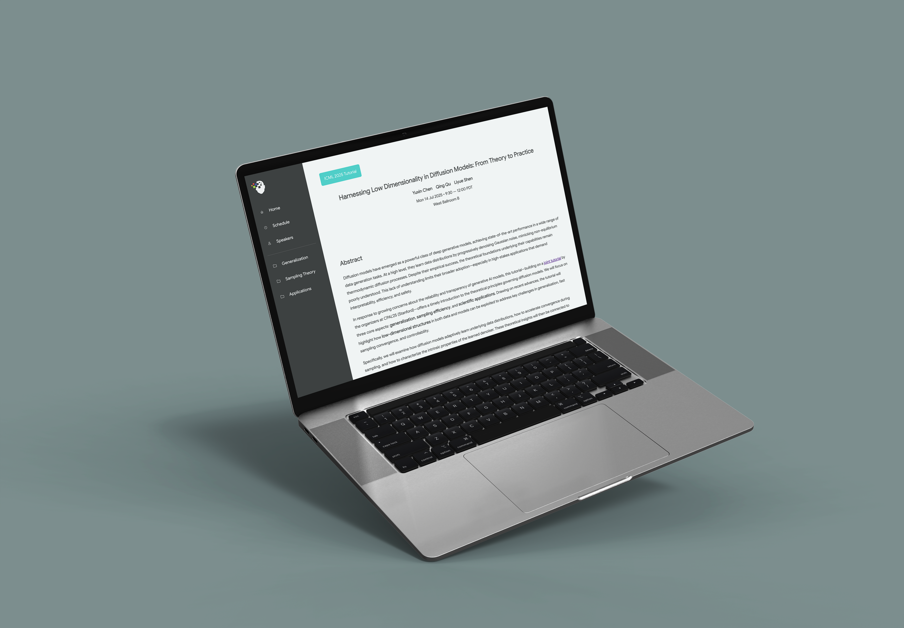
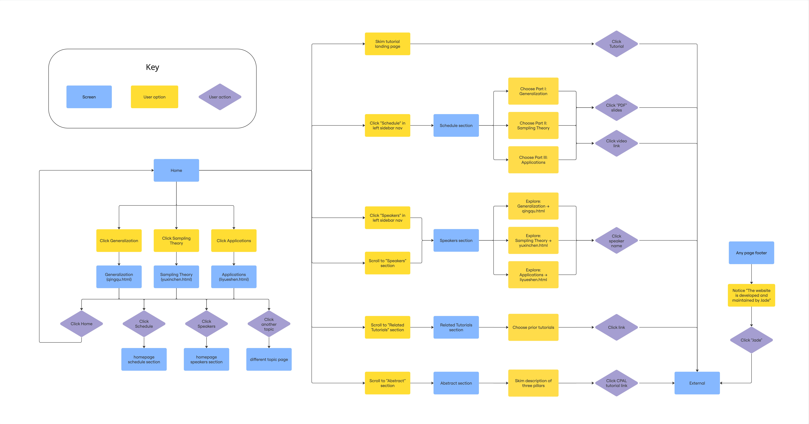

The Problem
Existing materials were scattered across PDFs, papers, and links with no clear entry point. Time-boxed ICML attendees needed a concise orientation layer without reading dense research documents first.
The Solution
A conference-neutral tutorial site that distills three pillars of diffusion model research into a scan-friendly structure with clear navigation, responsive layout, and at-point-of-need access to slides, videos, and code.
TL;DR
Designed and shipped a tutorial website for ICML 2025 making complex diffusion model research accessible to conference attendees
Challenge
Dense research scattered across PDFs with no clear navigation. ICML attendees had no way to quickly orient themselves before or during the tutorial.
Approach
Content modeling first. Read the papers, distilled each of three parts into plain language, identified one anchor figure per section, then built the information architecture around scan paths.
Solution
Responsive site with fixed sidebar navigation, progressive disclosure, and inline resource buttons per section. Designed in XD and implemented in HTML/CSS/JS on GitHub Pages.
Impact
Live and publicly accessible at ICML 2025. First coded project shipped to a real research audience with academic collaborators.
Key Design Decisions
Three choices that shaped how a dense academic topic becomes scannable for a time-pressured audience.
01
Content before chrome
Before touching Figma I read the papers and distilled each section into plain-language notes. Every navigation and layout choice followed the content structure, not the other way around.
02
Fixed sidebar over alternatives
Three navigation variants were tested. Fixed sidebar won because it keeps orientation visible at all times and supports quick jumps during a live tutorial session where attendees move non-linearly.
03
One anchor figure per section
Each of the three parts gets one key figure that communicates the core idea at a glance. Progressive disclosure handles the rest. This reduces cognitive load for newcomers while still serving depth-seekers.
Grounding in the content before designing anything.
Read the tutorial proposal and key papers across generalization, efficiency, and controllability. Distilled each into plain-language notes and identified one anchor figure per part.
Built a detailed flowmap and sitemap before any wireframe. Defined the site taxonomy, user pathways, and verified all critical content was reachable from main sections.
Regular check-ins with Prof. Qu to validate image selection, caption length, and copy density against real ICML attendee needs. Shortened and simplified through multiple rounds.

From UX prototype to shipped GitHub Pages site.
Component-based responsive prototype with sidebar nav, schedule, and per-section resources. Interactive hover and active states with anchor scroll behavior.
Converted vague durations into exact clock times. Added inline resource buttons per section to reduce pogo-sticking. Compact references accordion keeps pages scannable.
Converted prototype to semantic HTML/CSS/JS. Optimized assets, added Open Graph metadata, deployed on GitHub Pages. Documented handoff with README and asset map.

Designed, built, and shipped end to end.
Treating comprehension as a measurable outcome changed how I approached complex content.
Reading the papers first meant every navigation and layout decision followed content structure.
Short review cycles with the research team validated only what mattered.